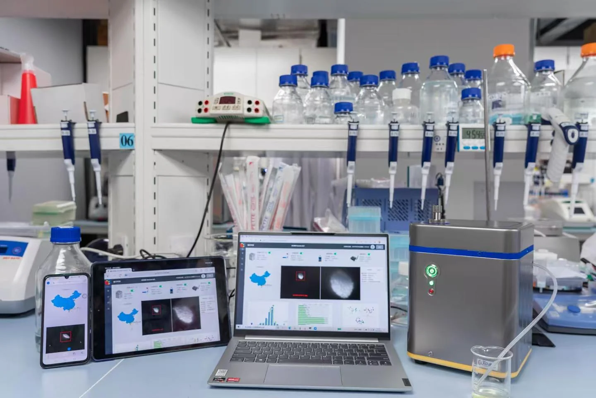
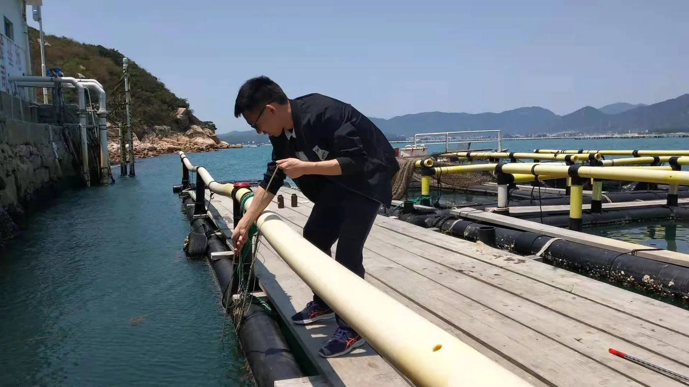
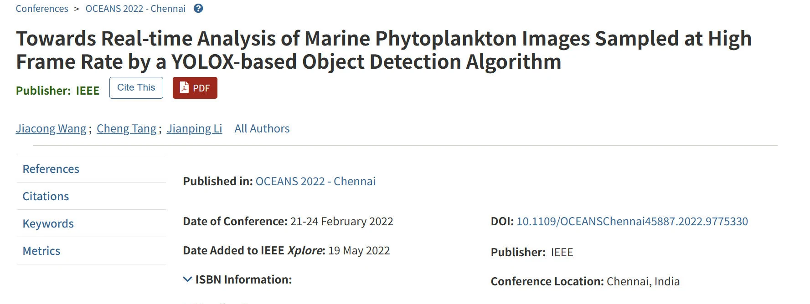
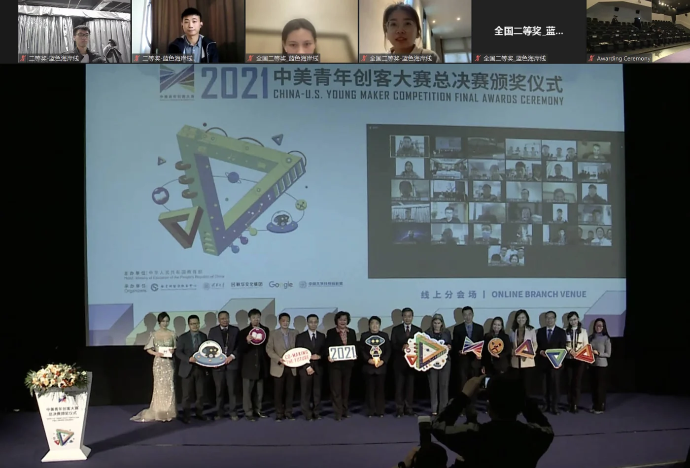
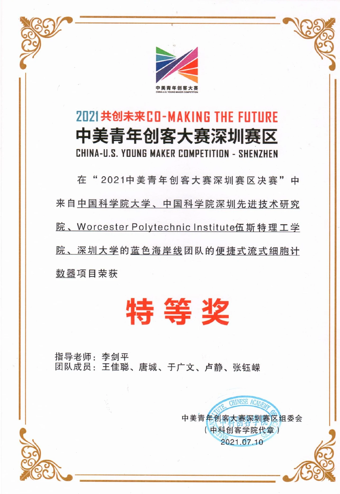
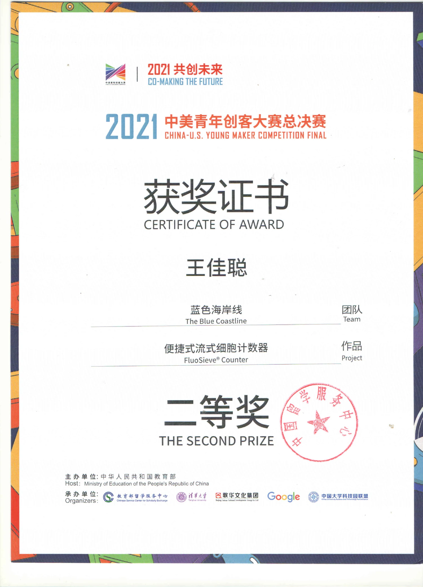

RESEARCH · EDGE AI · HARDWARE
走航式海洋浮游植物流式成像智能分析仪系统研制
我的角色：算法与系统研发主力。从采集控制程序、数据集构建、视觉算法，到 Jetson TX2 嵌入式集成与系统联调，覆盖科研仪器从数据到部署的主要链路。
中国科学院科研仪器设备研制项目，工作覆盖泵阀流体操控、激光与相机采集控制、32 类数据集构建、视觉算法开发及 NVIDIA Jetson TX2 嵌入式集成。系统完成海上科考验证；相关成果发表于 IEEE OCEANS 2022，申请发明专利 1 项，并进一步转化为获得中美青年创客大赛深圳赛区特等奖、全国总决赛二等奖的 FluoSieve® Counter 原型。

项目全链路
研究不是停在论文里，而是进入真实环境。
- 01从海洋问题出发
参与海洋采样与科考现场，理解天然海水中浮游植物快速分析的真实需求。
- 02构建三类数据口径
采集 32 类、每类 1 万张以上原始图像，形成 418,497 张 ROI 分类图像；另构建 32 类、30,339 张图像的 FluoPhyto 目标检测数据集。
- 03开发算法并部署到边缘设备
开发 ResNet-18 分类与 YOLOX 目标检测算法，并部署至 NVIDIA Jetson TX2；TensorRT 优化后，分类达到 95.91% 准确率和 160 ROI/s，检测达到 74.51% mAP 和 23 fps。
- 04形成完整仪器系统
把泵阀流体操控、激光控制、图像采集与智能分析整合进 FluoSieve® 系统，并在实验室细胞计数与天然海水赤潮监测中验证。



公开成果
论文、专利申请与竞赛成果。
基于该项目，在 OCEANS 2022发表会议论文 1 篇（第一作者），申请国家发明专利 1 项。2021 年，我组建“蓝色海岸线”团队，主导 FluoSieve® Counter 原型研制并担任主要答辩者，作品获得中美青年创客大赛深圳赛区特等奖、全国总决赛二等奖，并获广州日报、深圳特区报等多家媒体报道。



